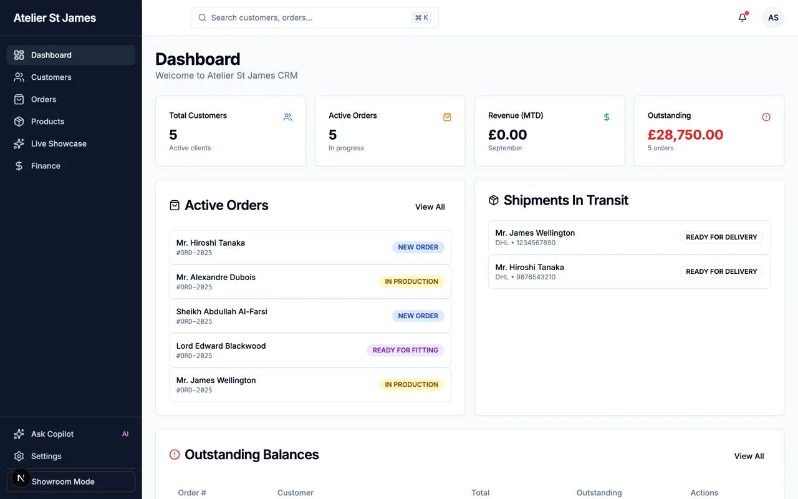
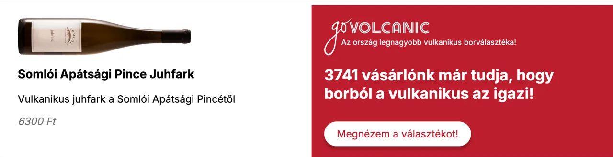
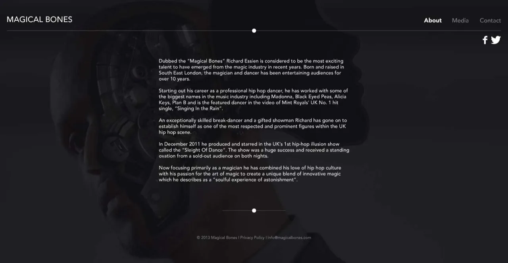
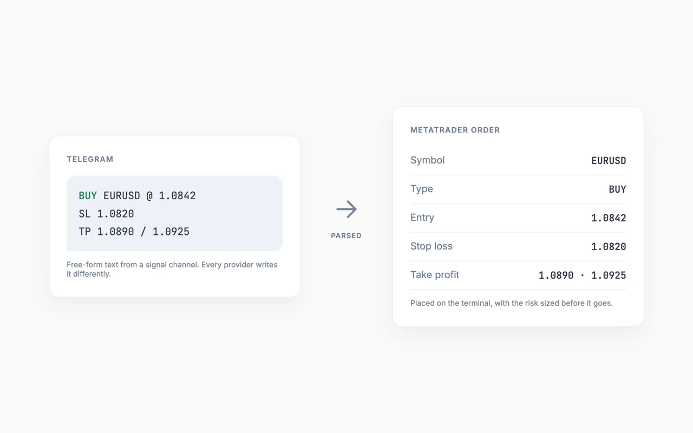

Client sites and festival toys, a Chrome extension, a train map, a protest, a spellbook, and two video series. Thirty-nine entries between 2012 and 2026.
A lot of these started the same way. Something public stopped working, or never existed, and building a replacement over a weekend looked more useful than complaining about it. The code is on GitHub.
Public tools
Things a public institution used to do, stopped doing, or never got round to. All of them run locally or hold nothing about you.
5 projects
2026
OviKréta igazolás
Hungarian nurseries and schools want a signed paper slip when you keep a child home. The usual routine assumes you own a printer. This fills the form in a browser tab, takes a signature, and hands back a PDF.
You can sign with a finger, type your name in one of five handwriting faces, or scan a QR code and sign on your phone while the form stays open on your laptop. The signature travels phone to laptop over WebRTC, so nothing but the connection handshake touches a third party.
A Chrome extension for Hungarian readers. Navigate to a state-aligned news site and it offers you an independent one instead, picked at random from ten outlets. In the Facebook feed it blurs or hides posts from the same sources and marks independent ones.
It does not censor. Every redirect shows a short explanation first and every step can be skipped, per session, per site or entirely. The lists are editable and each blacklist entry carries a reason for being there. No server calls, no analytics, everything in local storage.
MÁV shut down Vonatinfó in June 2025 and the replacement that appeared got caught in a political argument within days. I am a hobby railfan who writes software, so I built a third option over a weekend.
Every active train on a map, coloured by delay, with stopping patterns, live ETAs and station departure boards. The background worker polls MÁV at most once a minute and everything else reads from cache, because a hobby project has no business adding load to a public operator.
A public register of people who made themselves useful to FIDESZ, and what it cost the rest of us. Seventy-two entries, each tagged by what they did — corruption, propaganda, nepotism, culture war, stadium building — and searchable by name.
It is played as a bingo card because the pattern is the point: once you have seen the same handful of names appear behind the same handful of decisions, the card fills itself. The tone is light. The sourcing is not.
Hungarian and English. Roughly thirty of the seventy-two still need a photograph.
A machine that reads Origo and tells you, in plain Hungarian, who exactly got screwed in the article you just skimmed. It scrapes the piece, works out the beneficiary and the loser, and reports back.
The joke is that it needs no editorialising whatsoever. The source material does the work; the tool only removes the passive voice.
It is not deployed. The prototype carried its API keys in the source file rather than the environment, which is exactly the sort of thing you do at eleven at night when the point is the punchline.
Client and studio sites
Paid work, mostly for people whose business does not fit a template: a film crew, a second-hand shop, a chef, a wine importer, a tailor, a band, a housing co-op.
10 projects
2026
MONDAY
Production site for a five-person Budapest film crew shooting music videos for Hungarian rap and pop acts, commercials, and service work for foreign teams filming in Hungary.
The work grid is deliberately irregular. Every entry carries its own span and height so the tiles pack into an asymmetric mosaic and the page reads like a contact sheet rather than a gallery. Content lives in typed files rather than a CMS, because five people making a handful of updates a year do not need a subscription.
A preloved boutique on Pozsonyi út in Újlipótváros. One page: hero, gallery, opening hours that know whether the shop is open right now, and a hand-drawn map instead of an embedded Google frame. There is no cart, because the site exists to get you through the door.
Dóra runs the shop and needed to change hours, holiday closures and photos without me, so there is an admin panel. Uploads become WebP with a blur placeholder and swap in atomically, which means a failed upload leaves the live gallery untouched.
A Hungarian landing page selling 22.design's Framer build service. Websites in five to ten working days, editable by the client afterwards, with no developer in the loop.
It carries two pieces of tooling worth more than the page. A Vite plugin makes the running dev site editable in place, so a copywriter can hit ctrl+E, click any text, and have the change written back into the source file. And a Lighthouse script keeps timestamped reports in the repo, which is how the 99 in the hero copy got earned instead of asserted.
A portfolio for Álmos Galeotti, who runs educational partnerships at the Italian culinary school ALMA. His career resists a CV: arts management, then Michelin three-star kitchens, then Boragó in Santiago, then partnerships with Ginori 1735 and Barry Callebaut, plus two restaurants in Budapest.
A chronological list flattens all of that, so the page uses a bento grid instead. Read it in any order and the shape of the career still comes through. Warm terracotta and sage rather than the usual portfolio grey.
A bespoke tailoring house whose client records lived in spreadsheets and an inbox. This replaced both: customer profiles carrying several addresses and phone numbers each, historical body measurements, appointments, communication logs, and the order lifecycle from first fitting through production to delivery.
Revenue can be read three ways — by order date, by cash actually received, or accrued — because "how did we do last quarter" means a different number depending on who is asking. Payments track deposits separately from balances, and shipments resolve against DHL.
The screenshot is a local build seeded with invented customers. The real ones are the whole point of the discretion, so they do not appear here, and neither does the source.

A local build seeded with invented customers. Every name, order and balance here is fiction.
2023
GoVolcanic display banners
A retargeting ad set in four IAB sizes for a webshop selling wines from Hungarian volcanic terroirs: Somló, Badacsony, Eger, Tokaj.
Each banner is one self-contained HTML file that pulls a product feed on load and renders a random wine. Adding a bottle to the campaign meant editing one JSON file on a bucket, with no re-export and no re-upload to the ad network, so the client could swap the promoted wines themselves.

The 970×250 unit, rendered from the original creative and its product feed.
A community-led housing project in Zugló needed to show people a building that did not exist yet. Renders in a slide deck do not answer the question anyone actually has, which is what it would be like to stand in it.
So: the building on a map, the floor plans, and 360° panoramas you can look around from inside the rooms. It runs in a browser on a phone, because it was shown to people at meetings rather than in an office.
A pair of boutique rental houses in the south of France, let together or separately, to families or to whole groups. The site has to answer one question fast — will this fit us — before it does anything else.
So the structure is the accommodation, and everything else hangs off it: what the kids can do, what a group of twelve does differently, what there is within a drive. Four languages, because the guests arrive from four countries.
A site for a band, built the way band sites were built then: one page, a fixed backdrop, the player pinned to the bottom so the music keeps going while you read.
The navigation is drawn rather than typeset — about, media and contact are all hand-made marks, and the whole thing is held together by a set of PNGs cut from a single Photoshop file.

The design as it shipped.
2015
Sky Deutschland banners
Display advertising for Sky Deutschland across their sport and series output — Bundesliga, DFB-Pokal, film and box-set campaigns — in the full set of IAB sizes, from the 728-wide leaderboard down to the MPU.
The work was a template system rather than a stack of one-off files: layered Photoshop masters per product line, and an HTML5 animation template driven by a config so a new fixture or a new title meant new copy, not a new build.
The banners below are the original renders. The ad server they were built for no longer exists, so they play here as video.
Bundesliga leaderboard, 728×90. The MPU units are in the same set.
Culture and festivals
Work for Adaptér, Bánkitó and a festival above the Arctic Circle. Mostly things that had to survive a venue's wifi and a crowd standing in front of them.
6 projects
2026
Festival timetable, ported to Framer
Bánkitó’s programme ran for years on a WordPress and PHP engine written and maintained by Füzessy Karesz. That engine is his work, and it is the bulk of the work here — the scheduling model, the edge cases, the years of festivals that shook the bugs out of it.
What I did was port the rendering side to Framer, as React and TypeScript code components, so the festival could move its site without rebuilding its timetable. Six components came across: the grid itself in both orientations, a mobile list, an event overlay, a mosaic of featured acts, and a live feed of what is on next.
It is due to be published as a Framer plugin. The computation sits in a plain TypeScript layer with no React in it — 30-minute block generation, collision detection and lane assignment, the midnight crossover — so the awkward parts can be unit tested without rendering anything.
2024
Snake, projected onto a building
Adaptér, Újbuda's creative technology centre, opened at Bercsényi utca 10 with a two-day event. One programme item was playing Snake on the wall of the block across the street.
A projector threw the playfield onto the facade, and the building's real windows sit inside it as obstacles, so the snake has to weave between them. Hit a window and the round ends. Aligning obstacle boxes against a projected image by hand is slow, so there is a visual editor: load a photo of the facade, drag boxes over the windows, export. Any other building works the same way.
A touchscreen kiosk built for Adaptér and the science-communication project Szájensz Szeánsz. It asks ten yes-or-no questions about technology and society, and whichever way you answer, it argues the opposite position back at you.
The point is not to score anyone. The point is that you stand in a public space, commit to an answer, and then read a serious case against it. It ran at Bartók Feszt and at Adaptér's own events, with a service worker so it survived the venue network.
Built for a wine tasting, where the failure mode is a room full of people who have tasted eleven wines and can no longer remember which two they wanted to take home.
So the ordering happens during the tasting, not after it. A catalogue of what is open tonight, an order that builds as you go, and a back end that keeps the wines and the orders as separate things so the list can change between events without touching anybody’s basket.
2022
Bánkitó 2022 key visual
Bánkitó is an independent Hungarian festival on the shore of Lake Bánk. I wanted the 2022 key visual to assemble itself on screen rather than appear as a flat image, so the artwork became a 35-path inline SVG driven by GSAP, growing out of its own baseline over three seconds.
The file still carries both experiments. A stroke-reveal version that looked good on thin lines and bad on the filled shapes sits commented out next to the scale-in version that shipped, because the comparison is the interesting part.
Kirkenes sits fifteen kilometres from the Russian border, and every February since 2004 it has hosted a festival built around one question the town is actually arguing about. In 2019 that was China's expansion into the Arctic.
I went as a volunteer and wrote a report for Phenom: a performance dinner staged as an ancient Greek banquet, a pop-up bar in the old fire station serving seaweed wine, a closing party in the municipal swimming pool, and a town of three thousand people putting its entire administration behind a cultural event at minus twenty degrees.
Small things built to remove a specific annoyance, usually my own. Two of them parse trading signals, which is a longer story.
6 projects
2026
Piano Helper
A chord sequencer and workbench for people who can hear what they want and cannot yet spell it. Lay out bars, drop a chord into each, and it shows you the notes on a keyboard, the intervals, the roman numeral, and the scale the progression implies.
Every chord can be re-voiced without changing what it is: closed, open, drop-2, drop-3, rootless, and any inversion. Overlay a mode across the whole sequence and the keyboard repaints. Connect a MIDI keyboard and play into it.
The public build has the song-lookup feature switched off — that path calls a paid model, and an API key has no business sitting on a public box.
Settling summer dates across a group of friends usually dies in a group chat. Doodle wants accounts and calendar invites want email addresses, and neither maps well to "which four-day block are you free for".
Create a poll, send one link, done. No sign-up, no email, no password. Everyone clicks the chunks that work for them and the counts give you the answer, with a tooltip naming who picked what.
UTM parameters only work if everyone agrees on spelling. One person writes utm_source=facebook, the next writes FB, and one channel becomes three rows in the report. Fixing that afterwards costs more than the discipline would have.
So you define a campaign once, pick it from a dropdown, and the builder writes the tag from its slug. Click tracking was in an early draft and I cut it: counting clicks through your own domain means running a redirect service, and the tags already do the counting.
Copies trading signals from Telegram channels into MetaTrader 4 and 5 accounts, for traders who were otherwise retyping every signal by hand. It outgrew the repo and moved to its own site.
A hackathon build for Westend, the shopping centre. Two halves: a scraper that walked every shop page and pulled out what each tenant actually sells, and an admin panel that lets the centre keep that structure tidy afterwards.
The panel is the interesting half. Hierarchical categories, coloured tags, drag-and-drop reordering, and a tag count on every category so nobody has to guess where a product will end up. Built in Hungarian, for the people who would actually be typing into it.
Hackathon rules applied: it works, and the scraper key is a placeholder.
2024
TeleTrade.py
Telegram signal channels post in prose, and every channel posts differently. Some split one signal across four messages sent seconds apart. Regex parsers break on the next channel you subscribe to, so the parsing became a language problem handed to a language model, which returns structured JSON.
Messages are buffered per sender and held until an action word, a stop and at least one take-profit have arrived, then parsed together. Crude, and it worked well enough on the channels I was watching.
Archived. Nothing in it is investment advice, and automated order placement against a live broker account loses money fast.

There is no screen to photograph, so: what goes in, and what comes out.
Built for an audience of one or two, with no brief and no deadline. One is a character sheet; the other was going to be a company.
2 projects
2026
Viharotán Toma’s spellbook
A spellbook for one D&D character, a sorcerer, because flipping between the rulebook and a character sheet in the middle of your turn is miserable. Cantrips up through third-level spells, each with its school and casting time, and spell slots you spend and get back.
It is unapologetically single-purpose: it knows one character’s list and nothing else. It also throws confetti at you, which is the correct amount of ceremony for a good roll.
A matchmaking app for bands and DJs. Rather than chase promoters, you offer another band a slot in front of your own local audience and take one in front of theirs. This is the landing page that had to explain that trade in about six seconds.
The app is gone and the domain lapsed — open.banding.app is a parking page now. What survives is the landing page, captured as flat files from the original WordPress build: the design is intact, the call-to-action buttons are deliberately inert, and the analytics are stripped out. An exhibit, not a product.
Two series I hosted, a profile someone else made about me, and one night I spent on a stage rather than in front of a camera.
4 entries
2024
Sociomapping
Format and host · Adaptér
A conversation series built out of Adaptér's twelve-week world studies course for university students. Each episode takes one region apart with a guest who knows it, across politics, economics and sociology, against the question of whether the grass really is greener somewhere else.
I shaped the format and hosted the conversations. The Ruff Bálint and Pogátsa Zoltán episodes found an audience well beyond the lecture room.
A short series with Attila Máriás, 22.design's founder and service designer. We take a real Hungarian product, walk its actual user journey on camera, and say where it leaks and what we would change.
Auditing someone else's live checkout in public is a good discipline. You cannot hide behind a deck when the flow is on screen and the drop-off is obvious.
Hello Biznisz gave me their Digitálisan Tettrekész award after Égboltkép's pitch on Cápák között, the Hungarian Shark Tank, and filmed a short profile about how the business got there.
Xaver Varnus plays the organ. For the recital at the Szolnok synagogue gallery in November 2012 there was a jazz trio behind it, and I played guitar, with József Barcza-Horváth on double bass and Zsolt Tóth on percussion.
The set was Bach — the Air on the G string, Jesu, Joy of Man’s Desiring, the D minor Toccata and Fugue — closing on improvisations around a Hungarian folk song. Sony Music released it as one movement of Four Historical Concerts, next to recitals from Saint-Sulpice in Paris, Canterbury Cathedral and the Müpa in Budapest.
Things I organised, ran or founded, the record other people made of them, and one piece I wrote myself. The write-ups and segments are their authors' work, so they stay where they were published.
6 entries
2024
10+1 UX tipp karácsony előtt
A guest piece for Minner, written for Hungarian webshop owners heading into the Christmas season, when traffic spikes and patience does not.
Eleven concrete changes rather than principles: strip the checkout to the order, put the coupon field where it will not distract, fewer calls to action per screen, answer the delivery question before it becomes an objection, and keep stock information honest. The kind of list you can work through on a Tuesday.
Égboltkép was a data-driven print-on-demand platform for personalised gifts. We pitched it in the second season of Cápák között, the Hungarian Shark Tank, took investment from the technology angel Balogh Péter, ran it, and then it failed.
Forbes covered the deal as part of a weekly series on the show's businesses. A year later RTL came back to ask what had actually happened to the money, and Balogh Péter and I answered on camera.
BUSH brings the Central and Eastern European music industry to Budapest for three days of showcases and a conference: bands, producers, bookers and label people from the region, in front of each other rather than in front of Western Europe.
I ran marketing and communications for the 2019 edition. Contextus interviewed the team ahead of it.
A charity concert on the A38 in October 2018, put together by Randy Hardcore Event Management to raise money and attention for the Autizmus Alapítvány, with acoustic sets from members of Platon Karataev, Run Over Dogs and others.
A few of us went out to the foundation beforehand rather than turning up on the night. Phenom interviewed the participants about what we found there.
April 2017, during the fight over the law aimed at Central European University. We organised what we billed as the loudest demonstration in Hungary: around twenty thousand people said they were coming on Facebook, several thousand filled Szabadság tér, and the crowd moved from there past Parliament to the Oktogon with the music turned up.
I gave the opening speech on behalf of the organisers, on the theme that a country cannot be silenced. Deliberately not a traditional demonstration: alongside the speeches the weight was on music, dancing and making noise. Anger brings a crowd out once. Something closer to a street party brings them back.
Budapest’s Auróra is a community house: NGOs upstairs, a bar and a concert room downstairs, and a courtyard that holds a few hundred people. I was director of communications from 2014 to 2017, which meant building the communications strategy and the brand from nothing.
That turned out to be a defensive job. Through the government’s campaign against NGOs the house took continuous administrative pressure, and the coverage was the shield — the New York Times, the Guardian, the BBC, ZDF, Arte and Der Spiegel all ran it, which made closing the place quietly impossible.